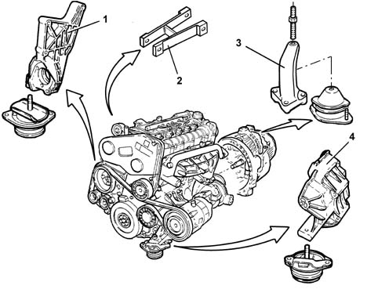

Composition
- Path
- Descriptions > 10 ENGINE > 1008 POWER UNIT SUPPORTS > Composition
- Kind
- system description
- Applies to
- engines: 2.4 JTD 20V; all production periods
- Interactive page
- https://sloeber94.github.io/elrnDB-lThss/en/#/839967
Applies to: engines: 2.4 JTD 20V; all production periods
STRUCTURE
The power unit is said to be suspended.
The unit is secured to the body by means of 4 mounts with flexible damping blocks:
- a rear block connects the engine to the flexible block secured to the suspension frame (the intermediate driveshaft is also connected to this mount).
- a reaction link that connects the engine to the body
- a gearbox-end steel block that connects the engine to the flexible block secured to the body
- a steel camshaft-end block that connects the engine to the flexible block secured to the suspension frame (the compressor is also connected to this mount).
To minimise judder, the top of the engine is connected to the body by a reaction link.

- 1, Rigid rear mount
- 2, Reaction link
- 3, Rigid gearbox-end mount
- 4, Rigid camshaft-end mount